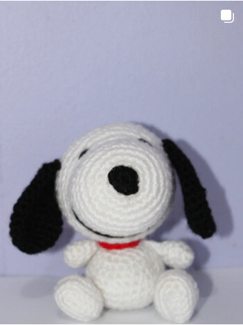
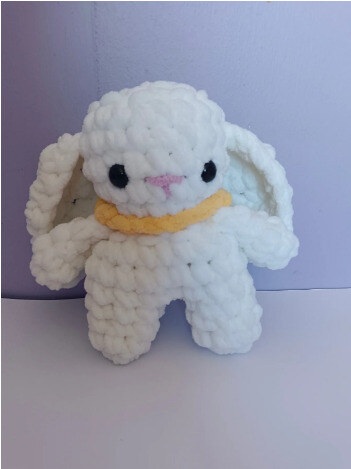
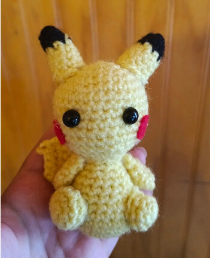
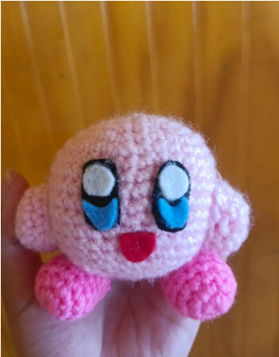
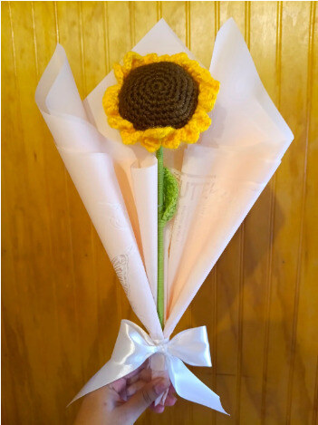
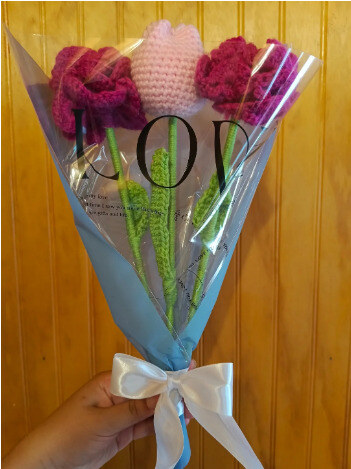

🧶 Hecho a mano con amor
Sandy
STORE
Amigurumis, flores y creaciones de crochet hechas a mano. Encuentra un regalo especial o solicita un diseño creado especialmente para ti.
Nuestras creaciones
Crochet hecho con cariño
Cada pieza es única. Los colores, diseños y disponibilidad pueden variar.





¿Tienes una idea especial? 💗
Cuéntanos qué personaje, flor o detalle imaginas y revisaremos las opciones para convertirlo en crochet.
✓
Diseños personalizados
Elige personaje, colores y estilo.
Elige personaje, colores y estilo.
✓
Hecho completamente a mano
Cada creación es única.
Cada creación es única.
✓
Regalos con significado
Para cumpleaños, aniversarios y ocasiones especiales.
Para cumpleaños, aniversarios y ocasiones especiales.
¿Cómo pedir?
1
Escríbenos
Contáctanos por WhatsApp o Instagram.
2
Cuéntanos tu idea
Envíanos una referencia, colores y tamaño deseado.
3
Recibe tu cotización
Te indicaremos el valor, plazo y disponibilidad.
4
¡Disfruta tu Sandy!
Tu creación será realizada especialmente para ti.
Sobre Sandy Store
Sandy Store es un emprendimiento dedicado a crear amigurumis, flores y detalles tejidos a crochet con dedicación y atención a cada pequeño detalle.
Trabajamos de forma 100% online y no contamos con tienda física. Escríbenos para conocer la disponibilidad y coordinar tu pedido.
Hablemos
Contáctanos 💌
Consulta por productos, disponibilidad y pedidos personalizados.